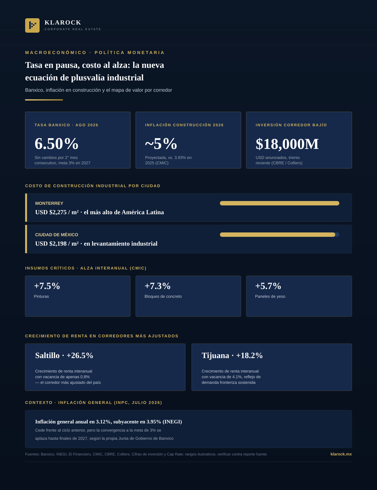
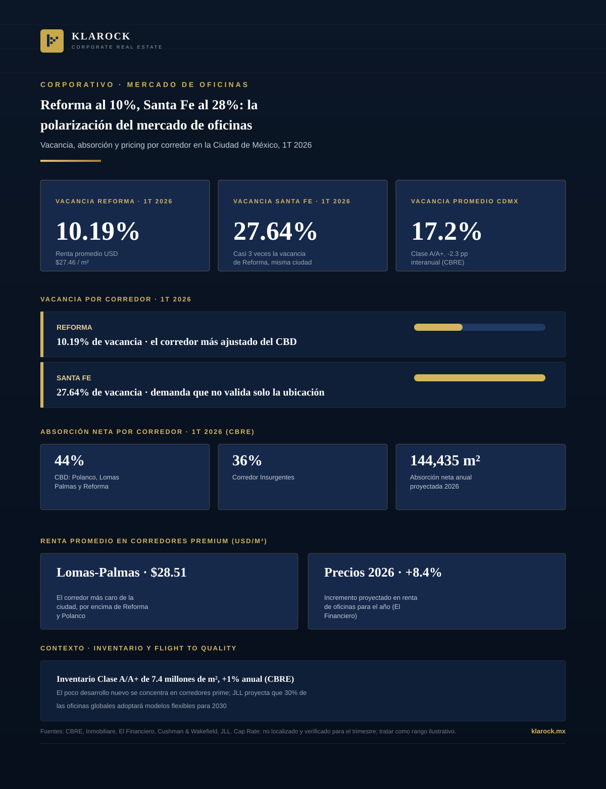
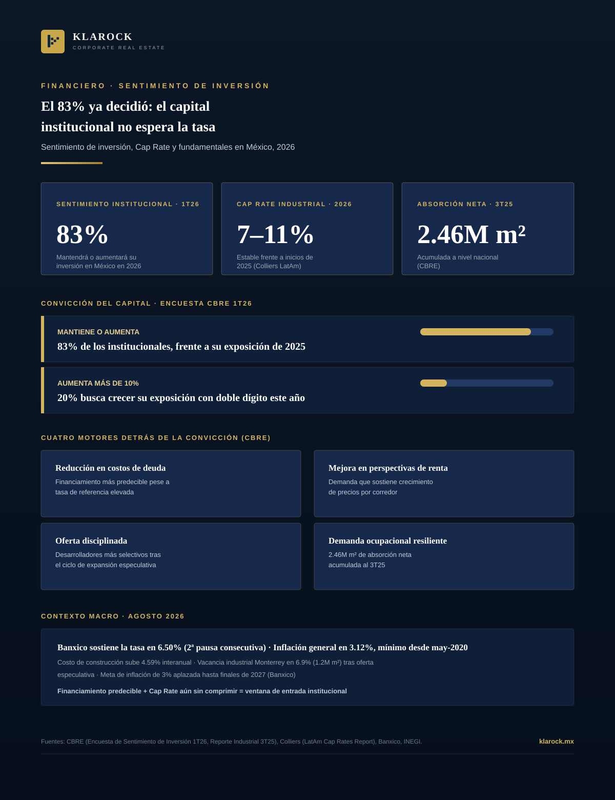
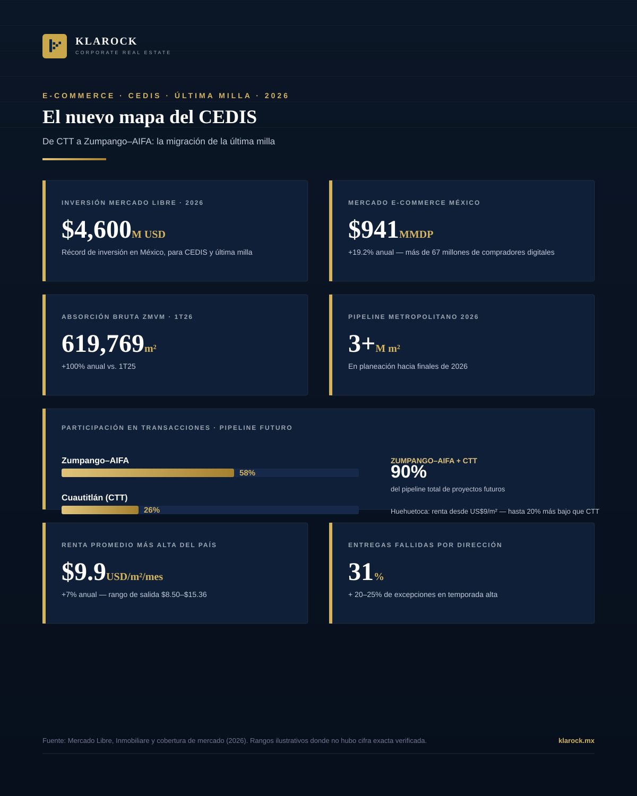
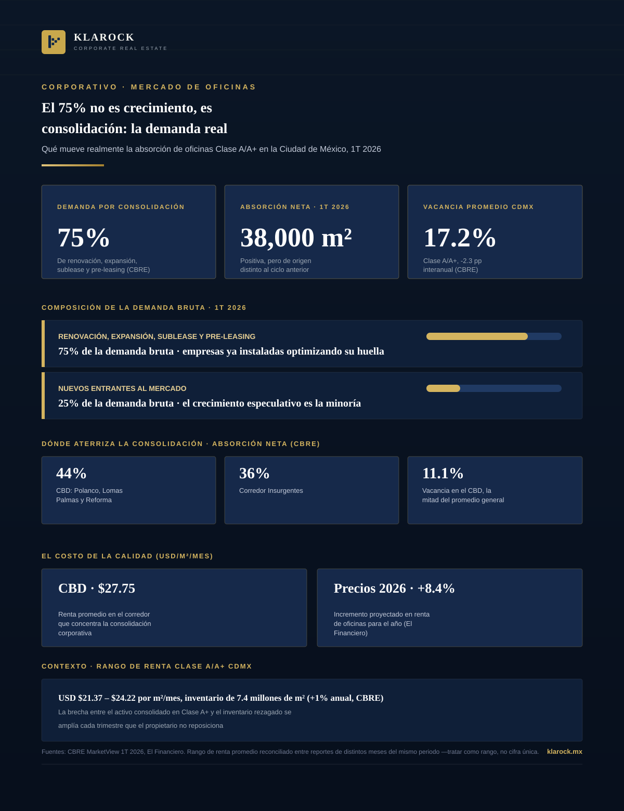

Blog
Infografías y análisis sobre el mercado industrial y corporativo en México — corredores, normatividad, nearshoring y tendencias de inversión.

Mercado · 2026-08-01
Guía visual de referencia: dónde invertir, expandirse o reubicar manufactura y logística en México, corredor por corredor.
Ver infografía →
Mercado · 2026-08-02
Análisis completo del mercado industrial de la Zona Metropolitana de Guadalajara en el primer semestre de 2026: inversión extranjera, absorción, inventario Clase A, precios y el mapa de parques industriales por corredor.
Ver infografía →
Tecnología · 2026-08-02
El 81.2% de los operadores de inventario quiere integrar inteligencia artificial, pero solo el 11% la usa hoy. Un análisis del informe State of Inventory Management 2026 y lo que implica para la infraestructura industrial.
Ver infografía →
Nearshoring · 2026-08-06
Arizona se consolida como el nuevo polo mundial de semiconductores con TSMC e Intel. Por qué Sonora —y en particular San Luis Río Colorado— es la pieza logística que hace viable ese crecimiento.
Ver infografía →
Retail · 2026-08-06
Detrás de la promesa de entregar en menos de 30 minutos hay una transformación logística que está redibujando el mapa comercial de las grandes ciudades mexicanas: las dark stores.
Ver infografía →
Retail · 2026-08-06
Un análisis de JLL confirma qué categorías el comercio electrónico no puede replicar. Por qué wellness, gastronomía y entretenimiento pasaron de amenidades a anclas del retail físico.
Ver infografía →
Tecnología · 2026-08-12
Querétaro concentra el 79% de la capacidad de data centers de México y creció 450% en un año. CloudHQ invierte $4.8B en un campus de 900 MW. Pero la red eléctrica ya llegó a su límite — y eso está redefiniendo el real estate industrial del Bajío.
Ver infografía →
Nearshoring · 2026-08-13
Querétaro, Guanajuato, San Luis Potosí y Aguascalientes sumaron 44 proyectos automotrices y $507 millones de dólares en el primer semestre de 2026. Por qué el Bajío es hoy el corredor industrial más disputado de México — y qué implica la revisión del T-MEC para su futuro.
Ver infografía →
Financiero · 2026-08-14
Banxico mantiene la tasa en 6.50% mientras el costo de construcción se dispara al más alto de América Latina. Qué implica esta combinación para la oferta de espacio Clase A+ y la plusvalía en los corredores de nearshoring.
Ver infografía →
Corporativo · 2026-08-19
La vacancia promedio de oficinas Clase A/A+ en CDMX bajó a 17.2%, pero ese promedio esconde dos mercados opuestos: Reforma con 10.19% de vacancia y Santa Fe con 27.64%. Qué implica esta polarización para el reposicionamiento de activos corporativos.
Ver infografía →
Financiero · 2026-08-21
La Encuesta de Sentimiento de Inversión de CBRE confirma que 83% de los institucionales mantendrá o aumentará su exposición inmobiliaria en México en 2026, con Cap Rates industriales estables entre 7% y 11%. Por qué el capital no está esperando el próximo recorte de Banxico.
Ver infografía →
Mercado · 2026-08-25
Mercado Libre invierte USD $4,600 millones en México en 2026 mientras el corredor Cuautitlán–Tultitlán–Tepotzotlán se satura. Por qué Zumpango–AIFA y Huehuetoca son la nueva frontera de los CEDIS de última milla.
Ver infografía →
Corporativo · 2026-08-26
El 75% de la demanda bruta de oficinas Clase A/A+ en CDMX proviene de renovación, expansión, sublease y pre-leasing —no de empresas nuevas—, según CBRE. Qué implica esta consolidación para el reposicionamiento de activos.
Ver infografía →